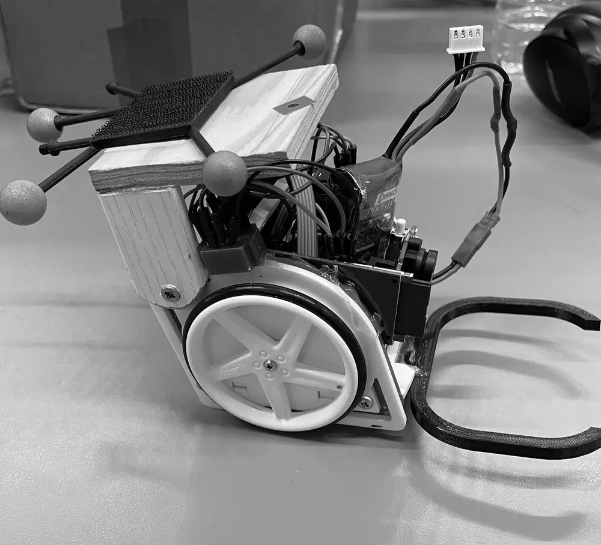

1 Autonomous ball-collecting robot
Solo build during CPGE. Vision guidance on the ball’s bearing, then cascaded PI loops on guidance and wheel speed, with DC motors, a 1:24 gearbox and encoders.
G(p) = 4 / (1 + 0.024p) · Kp 44 · Ti 0.17 s · phase margin 66° · ±0.5–1 cm
Source
2 SmartChess
See View A. Reed switches read the board; a CNN finds its corners and Lucas–Kanade tracking follows them; an embedded engine answers.
8 levels · target 400–2400 Elo · 30+ fps tracking
Source Video
3 Nand2cpu, a 16-bit ALU
An arithmetic logic unit from first principles in Verilog, with an automated testbench and an assembler.
0111 + 1000 = 1111 · 7 + 8 = 15
Source Video
4 OAI 5G CU–DU split
An OpenAirInterface split DU for lightweight UAV cells, over Ethernet, Wi-Fi and 5G backhaul.
Jetson Orin Nano · Raspberry Pi 5 · paper submitted 2026
Source Paper (PDF)
5 Evento
Wallet-based ticketing on Solana Pay, under hackathon constraints, with a clean boundary between on-chain and off-chain state.
Solana Pay · Django · sub-second finality
Source